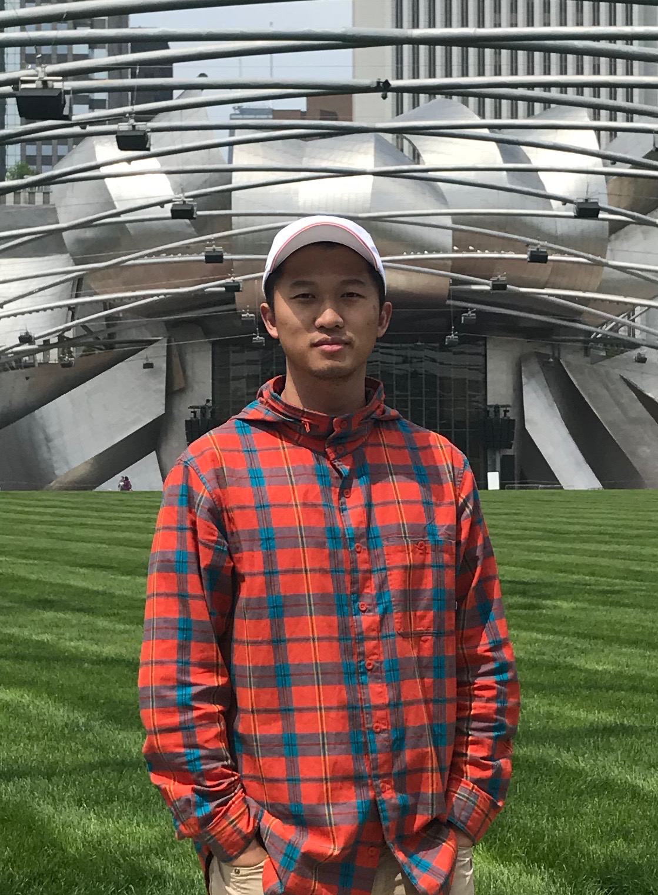

XIAOYU LIU

Email: xiaoyul@smu.edu
Biography
I am a PhD student at Southern Methodist University Computer Science and Engineering. I am advised by Prof. LiGuo Huang. I am also working with collegues from Human Language Technology Research Institute in UTD to apply machine learning on software engineering.
I am interested in some wonderful research topics such as API recommendation, software change impact analysis, and software change intent analysis. Details can be found in my publications.
News
- Our “Effective API Recommendation without Historical Software Repositories” paper is published in ASE 2018!
- Our “Linking Source Code to Untangled Change Intents” paper is published in ICSME 2018!
Publications
Recent Services
- IEEE Transactions on Software Engineering (TSE) Co-Reviewer
- International Conference on Software and System Processes (ICSSP) 2017, 2018 Co-Reviewer
- IEEE International Conference on Information Reuse and Integration (IRI 2018) 2018 Co-Reviewer
- Asia-Pacific Software Engineering Conference (APSEC) 2017, 2018 Co-Reviewer